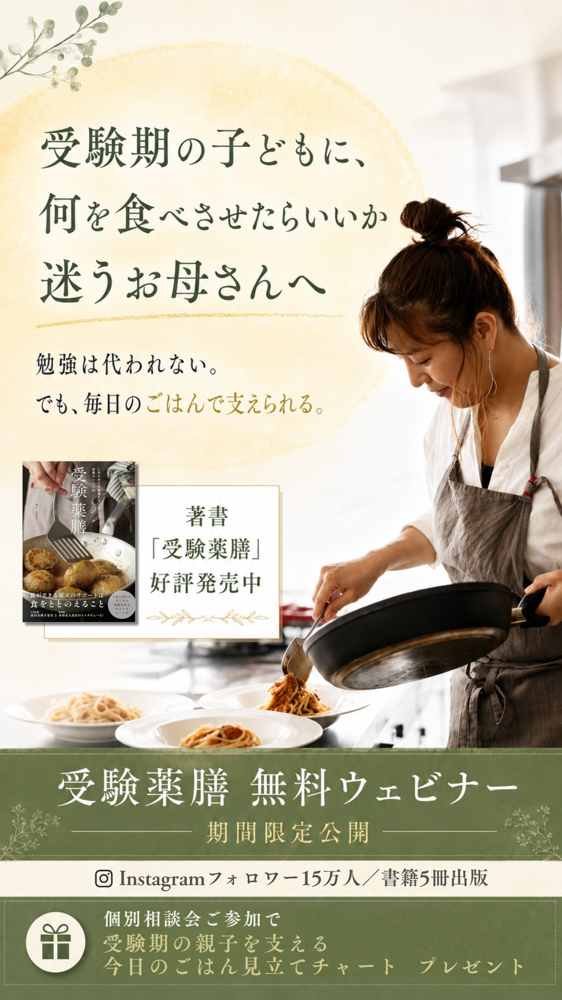
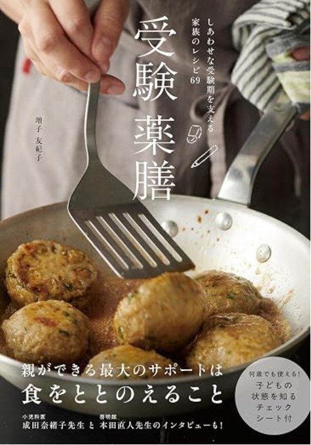
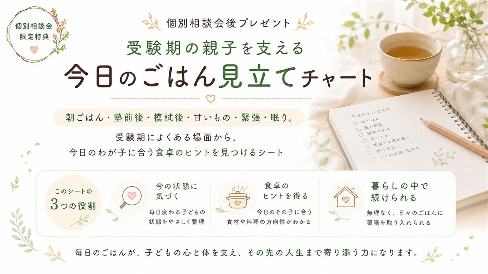
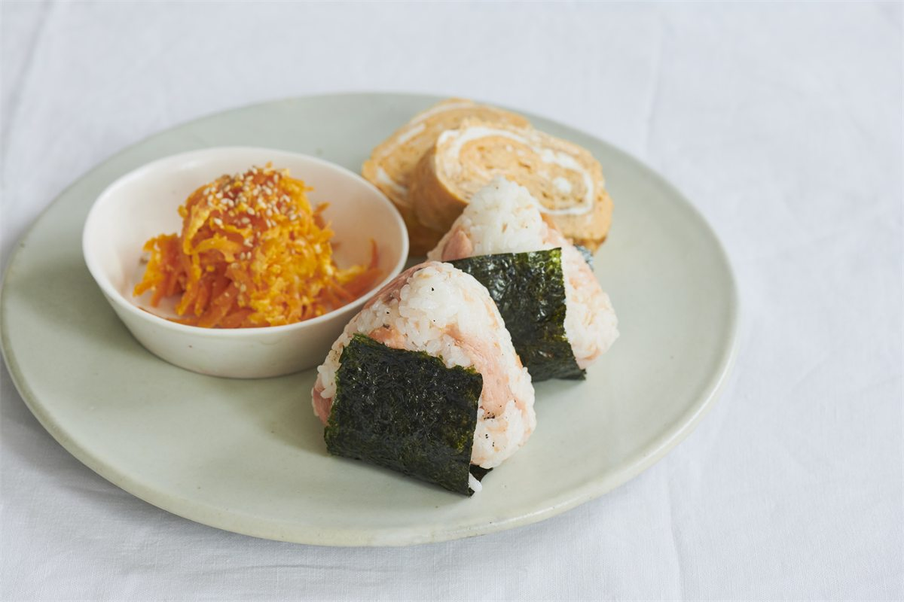
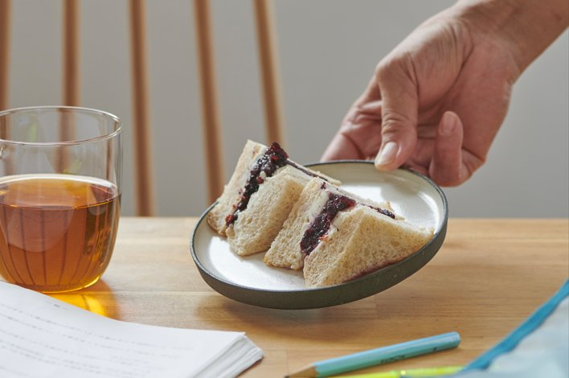
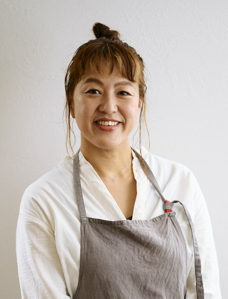

期間限定公開
受験薬膳 無料ウェビナーを見てみるCheck
もしひとつでも当てはまったなら、
このセミナーはきっとお役に立てます。
About
受験期のお子様は、
朝ごはんが入らなかったり、
甘いものばかり欲しがったり、
緊張でお腹が痛くなったり、
模試の結果に落ち込んだり、
イライラして親子げんかになったり、
夜なかなか寝つけなかったり――
そんな様子、ありませんか?
でも受験薬膳では
「顔望診(かおぼうしん)」といって、
顔を見るだけでお子様の体調・感情・バランスの崩れを知ることができます。
バランスの崩れた部分を戻す食材を割り出して、
毎日のごはんに追加するだけで、
お子様の体と心の状態が安定して、
受験に集中しやすくなるんです。

Program
朝ごはんが入らない、イライラする、甘いものばかり欲しがる――それは根性不足ではなく、心と体からのサインだということがわかります。
白っぽい・赤みが強い・紫っぽい・乾いている。唇の様子から、その日その子に必要なごはんの方向性が見えるワークをお伝えします。
固定レシピを覚えるのではなく、"その日の状態"に合わせて食材を選ぶ力が身につきます。忙しい日でも、いつもの食材で大丈夫です。
受験期に揺れているのは子どもだけではありません。お母さんが整うと、家庭の空気がどう変わるのかがわかります。
緊張して食べられない時、疲れて帰ってきた時、結果に落ち込んだ時――それぞれの場面でどう食卓を整えればいいかがわかります。
Special Gift
ウェビナー後の個別相談会ご参加で

朝ごはん・塾前後・模試後・甘いもの・緊張・眠り
受験期によくある場面から、
今日のわが子に合う食卓のヒントを
見つけるシート
顔色・唇・食欲・眠り・感情から、
今のご家庭に必要なごはんの方向性が見えてきます。
※これは病気を診断するものではなく、
"今日はここをいたわるとよさそう"を知るための
目安としてお使いいただけます。
書籍には掲載されない、
ウェビナー参加者だけの特別版です。
Point
薬膳と聞くと、
「難しそう」
「特別な生薬や苦い漢方を子供に食べさせるの?」
と思いがちですが、受験薬膳は違います。
お子様の顔を見て
今、お子様の心と体のバランスをとるために
必要な食材をわりだしたら、
あとは普段の料理に入れるだけ。
お味噌汁の具を変える。
おにぎりの中身を変える。
いつもの卵焼きに、ひとつまみ加える。
お子様が「おいしい」と喜んで食べてくれる、
いつものごはんのままでOKなので
毎日おいしく続けることができますよ。


Message

はじめまして。国際薬膳師の増子友紀子です。
料理人歴20年。フランス料理店で10年修行した後、東京・自由が丘で「リストランテ ヴィコレット」のオーナーシェフを務めてきました。
結婚・出産を機に「毎日のごはんで体をケアする」大切さを実感し、2016年より国際薬膳師として活動を開始。実践しながら薬膳を学べる「まいにち薬膳®」講座は、受講者数のべ6,500人を超え、Instagramでは約15万人のフォロワーさまに薬膳のヒントをお届けしています。著書は5冊、『女性セブン』『Hanakoママ』など、メディアでも多数取り上げていただきました。
そんな私が今回、「受験薬膳」というテーマをまとめたのには理由があります。
それは、私自身の息子が、今年まさに受験生だからです。
正直に言うと、薬膳を長年伝えてきた私でも、"受験生の母"になって初めてわかることばかりでした。
朝ごはんが入らない。塾の前に何を出せばいいかわからない。模試の結果でイライラして、親子げんかになる。夜、なかなか寝つけない我が子を見て、不安になる。
勉強は、代わってあげられません。試験を受けるのも、結果と向き合うのも、最後は子ども自身です。
だからこそ、痛感しました。親としてできることが、こんなにも少ないのか、と。
でも、薬膳を実践してきた私だからこそ気づけたことがあります。
それは、毎日の食事なら、私にもできるということです。
子どもの顔色を見て、今日必要な一皿を選ぶ。それだけで、体の調子が整い、気持ちが少し落ち着き、家の中の空気まで変わっていく。実際に、私自身が息子と過ごす日々の中で、それを何度も実感してきました。
勉強は代わってあげられなくても、食卓からなら、わが子を支えられる。
その実感を、できるだけ多くの受験生のお母さんに届けたくて、この「受験薬膳」というテーマにたどり着きました。
薬膳と聞くと、難しそうに感じるかもしれません。でも大丈夫です。特別な食材も、難しい理論も必要ありません。今日からできることを、このウェビナーでお伝えします。